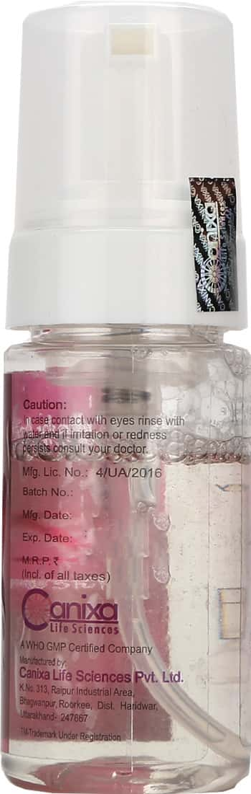
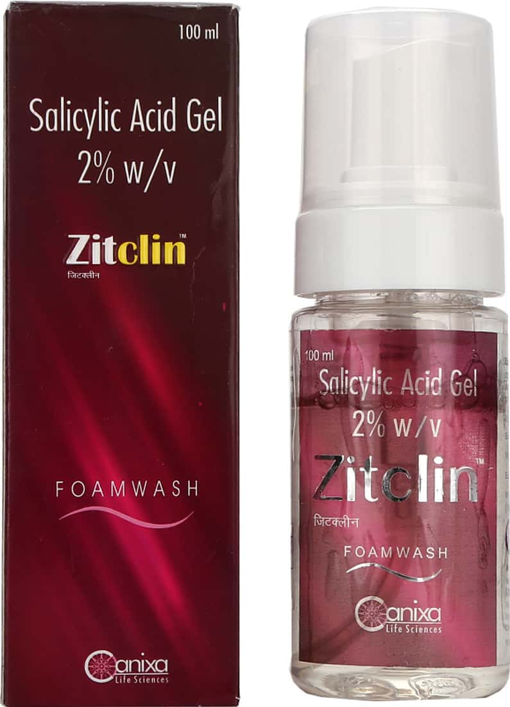
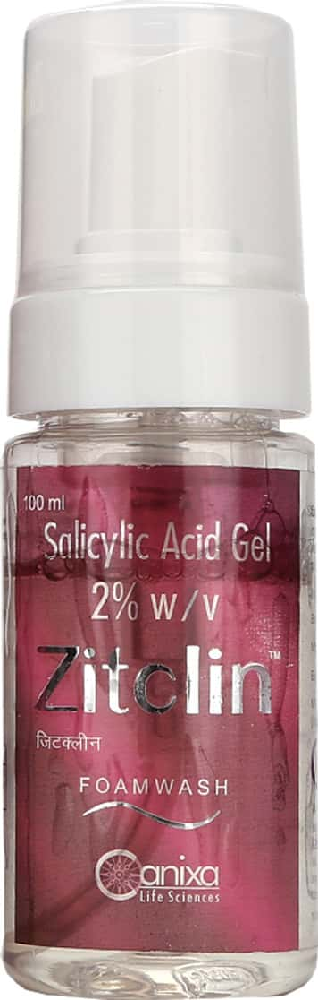
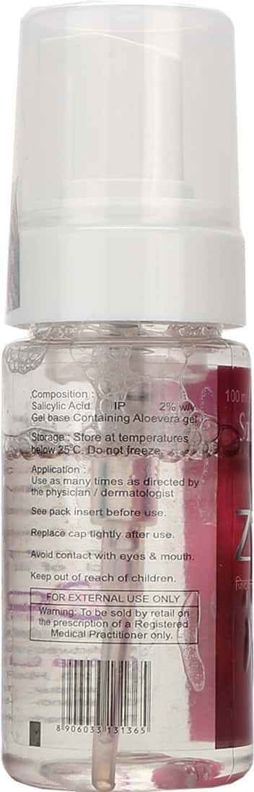
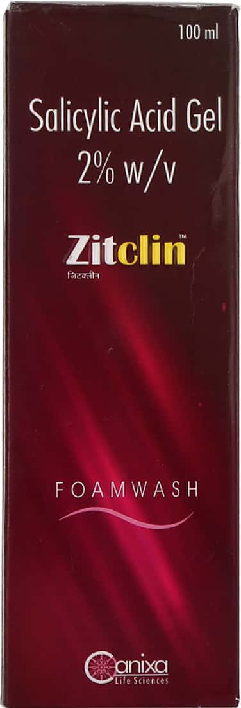

Zitclin - Salicylic Acid Gel 2% W/V Foamwash 100ml
Zitclin is a Salicylic Acid Gel 2% W/V Foamwash that is used to treat acne. It works by killing bacteria that cause acne and by reducing inflammation.
Benefits of Zitclin:
- Zitclin is a soap-free, gentle cleanser that is suitable for all skin types.
- It helps to remove excess oil, dirt, and makeup from the skin.
- It helps to reduce inflammation and redness caused by acne.
- It helps to kill bacteria that cause acne.
- It helps to prevent new acne from forming.
Directions for use:
- Wet your face with warm water.
- Apply a small amount of Zitclin to your hands and rub them together to create a lather.
- Massage the lather onto your face for 30 seconds.
- Rinse your face with warm water.
- Pat your face dry with a clean towel.
Ingredients:
- Salicylic Acid 2% w/v
- Aloe Vera Gel IP 2% v/v
- Carbopol 940 1% w/v
- Sodium Lauryl Ether Sulphate 30% w/v
- Cocoamidopropyl Betaine 30% w/v
- Glycerin IP 5% v/v
- Disodium EDTA 0.1% w/v
- Methyl Paraben IP 0.1% w/v
- Propyl Paraben IP 0.05% w/v
- Purified Water q.s.
Warnings:
- For external use only.
- Avoid contact with eyes.
- If irritation occurs, discontinue use and consult a doctor.
- Keep out of reach of children.
Storage:
Store in a cool, dry place away from direct sunlight.
Packaging:
Zitclin is available in a 100ml pack.
Image 1:

Image 2:

Image 3:

Image 4:

Image 5:

Image 6: